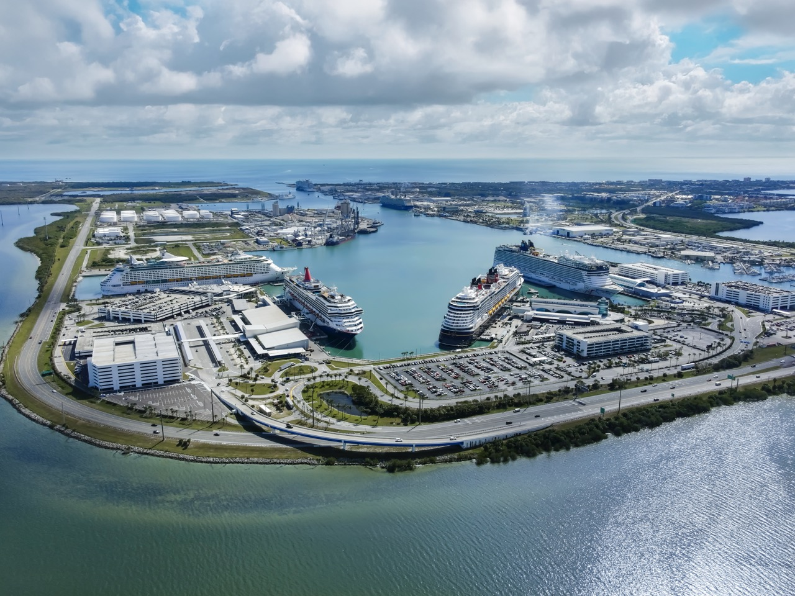

Cruise Travel Guide
Cruising is a great way to explore new destinations, enjoy entertainment, and relax while traveling. This guide will help you prepare for your trip.

What to Know Before Your Cruise
- Pack clothing suitable for your destination.
- Bring your travel documents and identification.
- Research your cruise line and destinations.
- Plan activities and excursions before departure.
Responsive Design Reflection
- The most significant layout issue I discovered was that the website needed a more consistent content area and better spacing. The original page also needed improvements to its image markup and stylesheet connection.
- I used box-sizing, max-width, margin, padding, and flexible widths to organize the content. I also used max-width: 100% and height: auto to keep images from overflowing their containers.
- At wider screen widths, the content has more room and the page looks less crowded. At narrow widths, the content uses the available space, and the navigation links stack vertically.
- Testing helped me understand why websites must adapt to different devices. It also showed me the importance of checking images, text wrapping, spacing, and horizontal scrolling.
- My next improvement would be to create a more attractive photo gallery and add better mobile navigation. I would also continue testing the website on different devices and browsers.